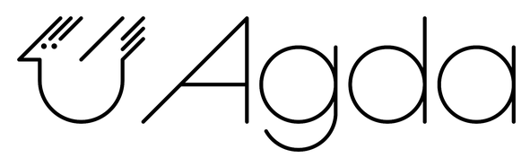

Formalização de uma semântica de provas na linguagem Agda
Escrito por Elisa Lardapide
Numa abordagem em semântica de provas, busca-se verificar quais inferências lógicas são possíveis a partir das regras axiomáticas de uma dada linguagem formal. Na conversa de hoje, vamos formalizar uma semântica de provas em Agda, uma linguagem funcional que também funciona como um assistente de provas.

Dizer que Agda é uma linguagem funcional significa dizer que se trata de uma linguagem de programação em que todo código é feito através da declaração e aplicação de funções. Toda função em Agda é declarada como pertencente a um determinado tipo, como ilustra o exemplo a seguir:
| I. Criamos um tipo para números naturais |
| ℕ |
| II. Definimos um caso base do tipo |
| 0 é do tipo ℕ |
| III. Definimos um caso indutivo do tipo |
| Se x é do tipo ℕ, então x + 1 também é do tipo ℕ |
| IV. Temos os números naturais |
|
0 é do tipo ℕ 0 + 1 = 1 é do tipo ℕ 1 + 1 = 2 é do tipo ℕ 2 + 1 = 3 é do tipo ℕ … |
No exemplo ilustrado, implementamos os números naturais. Para isso, criamos um tipo chamado ℕ. Definimos, então, um caso base para ℕ: declaramos que 0 pertence ao tipo ℕ. Enfim, definimos um caso indutivo para ℕ: se um dado valor x pertence ao tipo ℕ, então o valor x + 1 também pertence ao tipo ℕ. Com isso, temos os números naturais: sabemos que 0 é do tipo ℕ pelo caso base; também sabemos que 1 é do tipo ℕ pelo caso indutivo, pois se 0 é do tipo ℕ então 0 + 1 também é do tipo ℕ. É assim que alcançamos todos os números naturais: se 1 é do tipo ℕ então 1 + 1 = 2 também é do tipo ℕ; se 2 é do tipo ℕ então 2 + 1 = 3 também é do tipo ℕ e assim segue…
Para representar essa implementação dos números naturais na linguagem Agda, valemo-nos da seguinte sintaxe:
| Código em Agda |
| data ℕ : Set where |
| zero : ℕ |
| suc : ℕ → ℕ |
Nesse código, vamos entender a estrutura data __ : Set como a maneira de declarar tipos em Agda. No caso, declaramos um tipo chamado ℕ. As duas linhas indentadas após a palavra where indicam os casos que definem o tipo ℕ. A estrutura zero : ℕ indica o caso base, em que declaramos que o elemento zero é do tipo ℕ. Já a estrutura suc : ℕ → ℕ indica o caso indutivo, em que declaramos uma função suc que é do tipo ℕ → ℕ (uma função que recebe um valor de tipo ℕ e retorna um novo valor de tipo ℕ).
É a partir desse raciocínio que vamos nos valer para formalizar uma semântica de provas na linguagem Agda. Em específico, iremos formalizar o significado de uma sentença como Elisa dorme. Pensei nesse exemplo porque eu gosto bastante de dormir…
Tradicionalmente, na Semântica Formal aplicada em linguagem natural, adota-se uma abordagem conhecida como semântica de modelos para formalizar o significado de uma sentença como Elisa dorme. De maneira simplificada, podemos entender um modelo como uma representação de uma dada realidade. Em teorias formais, o modelo consiste em um conjunto de objetos matemáticos, com propriedades e relações definidas sobre esses objetos (Borges Neto, 2003). Os objetos e propriedades definidos no modelo devem ser capazes de representar e prever adequadamente o comportamento semântico de uma dada expressão linguística.
Em um modelo semântico, é comum definir os conjuntos Entidade e ValorDeVerdade. Neste post, vamos considerar que os objetos contidos no conjunto Entidade correspondem a indivíduos. Por sua vez, os objetos contidos no conjunto ValorDeVerdade correspondem aos valores falso e verdadeiro. Assim sendo, para representar Elisa dorme no modelo semântico, consideramos que o significado do nome Elisa pertence ao conjunto Entidade e que o significado do verbo dorme é uma função que recebe um objeto do conjunto Entidade e retorna um objeto do conjunto ValorDeVerdade: ao receber Elisa como argumento, o verbo dorme retorna o valor verdadeiro (caso seja verdade no modelo que Elisa dorme) ou o valor falso (caso seja falso no modelo que Elisa dorme). Se em meu modelo semântico eu estou representando o nosso mundo real, em que sabemos que Elisa dorme (assim como todo indivíduo), então o valor retornado será verdadeiro. Mas caso em meu modelo semântico eu esteja representando um mundo fictício, em que por algum motivo misterioso Elisa nunca dorme, então o valor retornado será falso.
Note que, em uma abordagem de semântica de modelos, a formalização do significado de Elisa dorme corresponde a representar seu valor de verdade em um modelo. Nosso interesse aqui, no entanto, é desenvolver uma semântica de provas. Em uma semântica de provas, formalizar o significado de Elisa dorme corresponde a uma demonstração que prova que é possível inferir Elisa dorme pelas regras axiomáticas da linguagem que está sendo utilizada para a formalização (Ranta, 1995). Assim sendo, ao invés de falarmos de um conjunto de valores de verdade, falamos de um conjunto de provas:
| I. Criamos um tipo para indivíduos |
| Entidade |
| II. Definimos um elemento desse tipo |
| elisa é do tipo Entidade |
| III. Criamos um tipo para dorme |
| Se x é do tipo Entidade, então Dorme x é um tipo |
| IV. Temos uma prova |
| prova é do tipo Dorme elisa |
No exemplo ilustrado, implementamos o significado de Elisa dorme. Para isso, criamos um tipo chamado Entidade e declaramos que elisa pertence ao tipo Entidade. Em seguida, criamos um novo tipo, que funciona como uma função que recebe um elemento x do tipo Entidade e retorna um novo tipo Dorme x. Enfim, declaramos uma prova (que chamamos de prova…) do tipo Dorme elisa. É importante entender que declarar prova como pertencente ao tipo Dorme elisa é equivalente a mostrar que é possível inferir Elisa dorme: o elemento elisa do tipo Entidade e da função que recebe um elemento x do tipo Entidade e retorna um novo tipo Dorme x nos permite formular o tipo Dorme elisa (que representa o significado Elisa dorme); e o fato de termos declarado o elemento prova de tipo Dorme elisa demonstra que esse significado é válido.
Repare que, ao invés de avaliarmos o significado de Elisa dorme através de um conjunto de valores de verdade (como na formalização da semântica de modelos), avaliamos o significado através de um conjunto de provas (que, na nossa formalização em semântica de provas, representamos pelo tipo Dorme elisa). Como esse conjunto não é vazio, já que contém o elemento prova, sabemos que é possível inferir o significado Elisa dorme. Para formalizar Elisa dorme na linguagem Agda, através do raciocínio apresentado até então, valemo-nos da seguinte sintaxe:
| Código em Agda |
| data Entidade : Set where |
| elisa : Entidade | data Dorme : Entidade → Set where |
| prova : Dorme |
Nesse código, a estrutura data Entidade : Set where representa a declaração do tipo Entidade. A estrutura elisa : Entidade, por sua vez, representa que o elemento elisa pertence ao tipo Entidade. De maneira análoga, a estrutura data Dorme : Entidade → Set where representa a declaração do tipo funcional Dorme, que recebe um elemento do tipo Entidade e retorna um novo tipo (que no código é representado por Set). Enfim, a estrutura prova : Dorme elisa representa a declaração de que o elemento prova pertence ao tipo Dorme elisa (demonstrando que esse tipo não é vazio e que, portanto, é possível inferir o significado Elisa dorme).
Apesar de simples, o código que fizemos aqui exemplifica como podemos formalizar uma semântica de provas na linguagem Agda. Por que utilizamos Agda ao invés de outras linguagens, como Rocq, para formalizar uma semântica de provas? Pra Kokke (2017), um dos principais motivos é a liberdade sintática da linguagem: a sintaxe do Agda, assim como o suporte para símbolos Unicode, permite que seu código se aproxime bastante da formalização que um semanticista faria manualmente. Aprender a programar em Agda é uma boa oportunidade para se familiarizar com uma semântica de provas. E o mais legal é que você não precisa optar por escolher entre uma semântica de provas ou modelos para formalizar um dado fenômeno semântico. Na verdade, em teorias recentes, como a Dependent Type Semantics, é possível integrar as duas abordagens numa mesma formalização (Luo, 2014). Acredito que só temos a ganhar formalizando fenômenos semânticos com outros olhares…
Referências
BORGES NETO, José. Semântica de modelos. In: MÜLLER, Ana; NEGRÃO, Esmeralda; FOLTRAN, Maria José. (org.). Semântica Formal. São Paulo: Contexto, 2003.
KOKKE, Wen. Formalising type-logical grammars in Agda. arXiv, Barcelona, 2017. Disponível em: https://arxiv.org/abs/1709.00728.
LUO, Zhaohui. Formal Semantics in Modern Type Theories: Is It Model-theoretic, Proof-theoretic, or Both?. Logical Aspects of Computational Linguistics, Toulouse, 2014. Disponível em: https://www.cs.rhul.ac.uk/home/zhaohui/LACL14FINAL.pdf.
RANTA, Aarne. Type-Theoretical Grammar. Oxford: Oxford University Press, 1995.